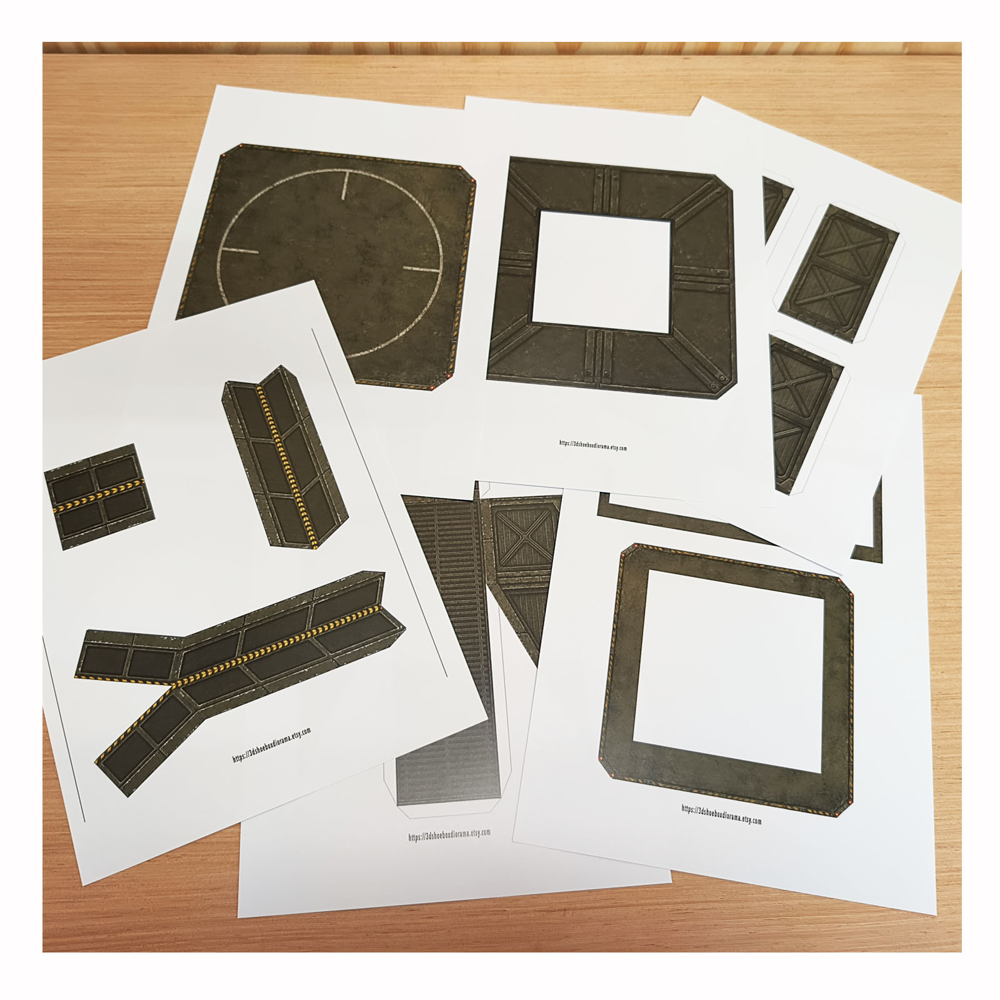
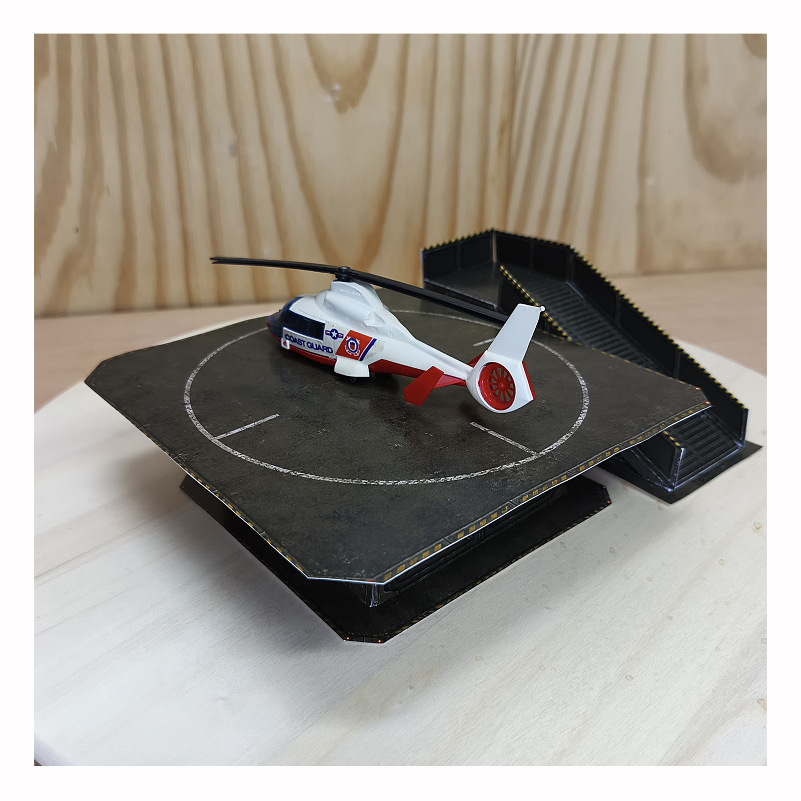
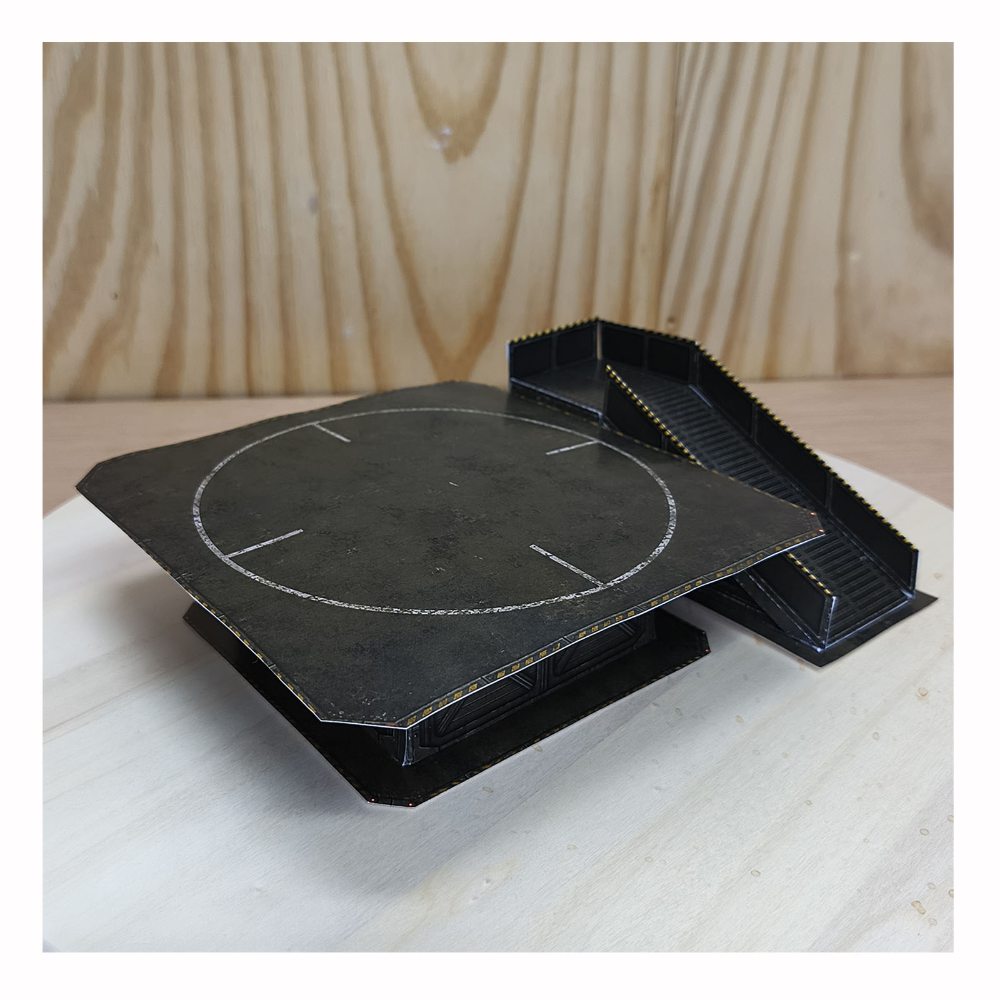
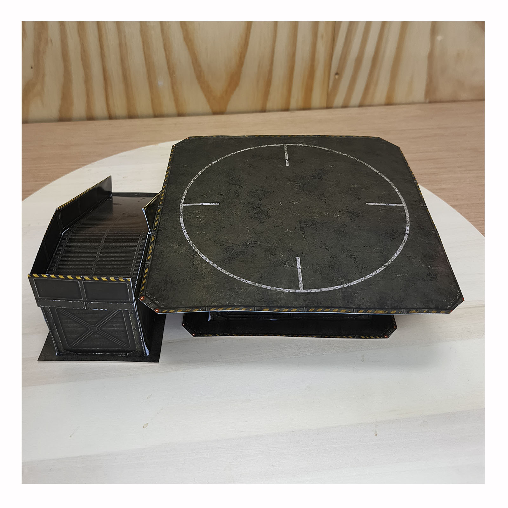
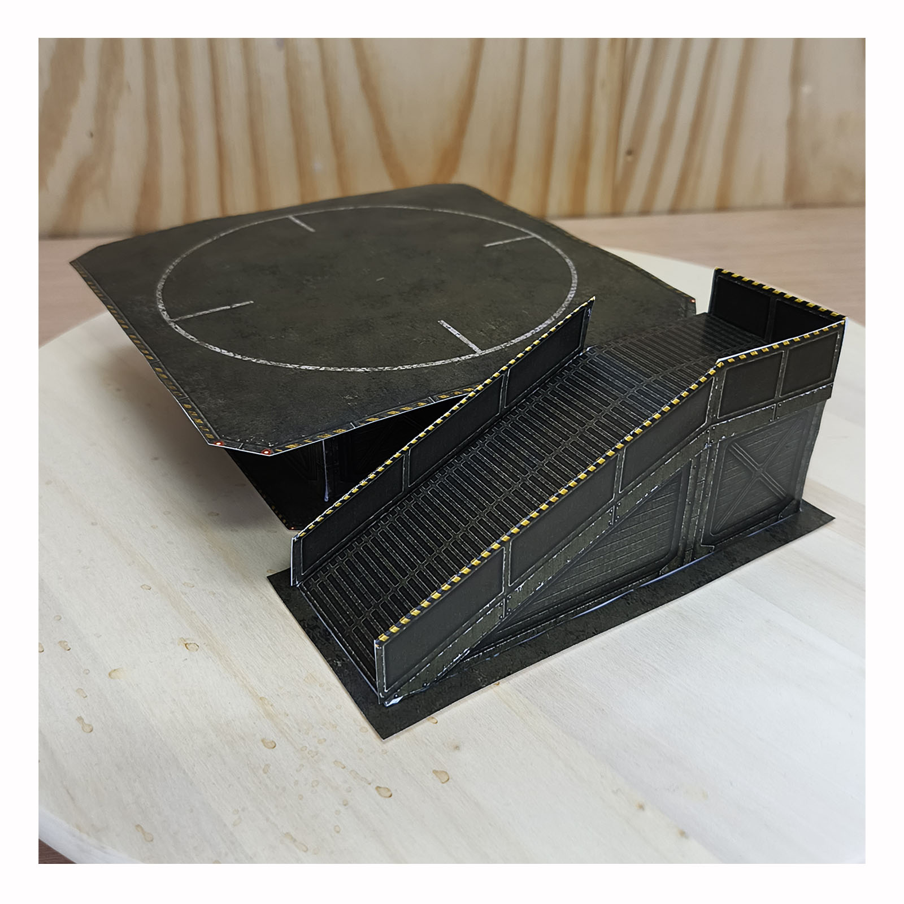
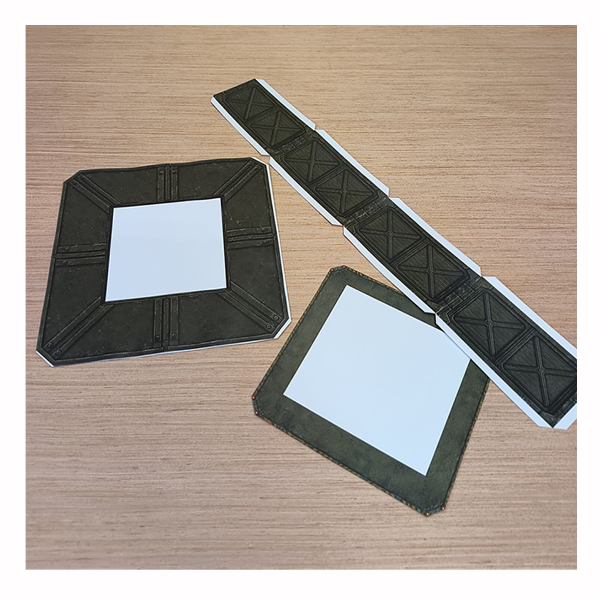
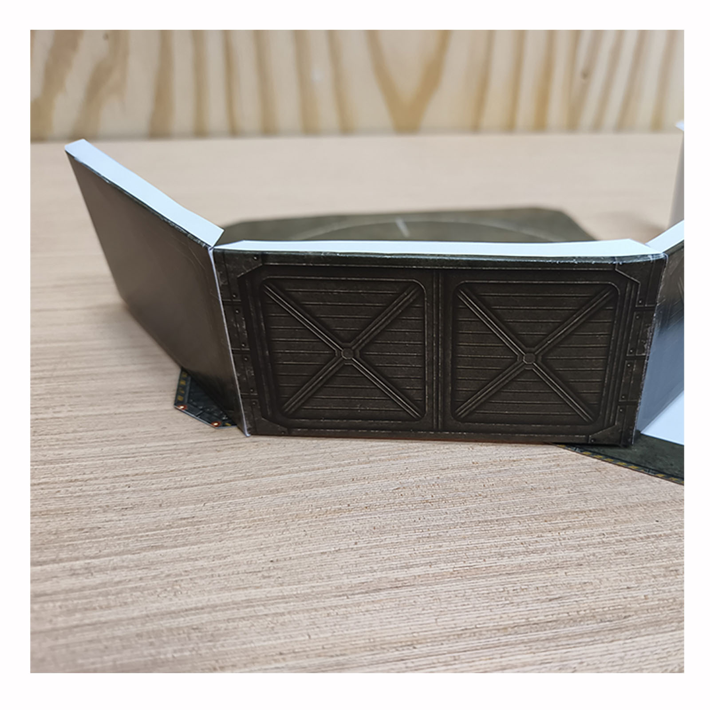
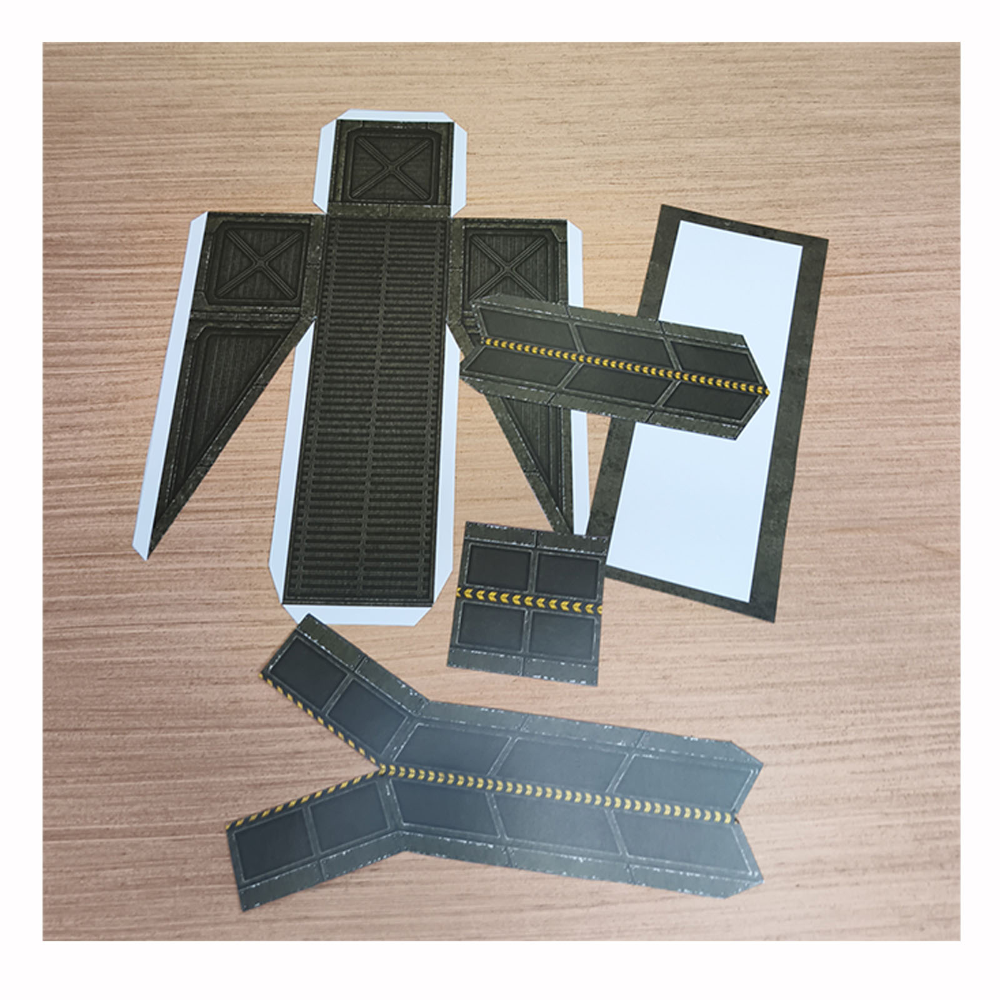
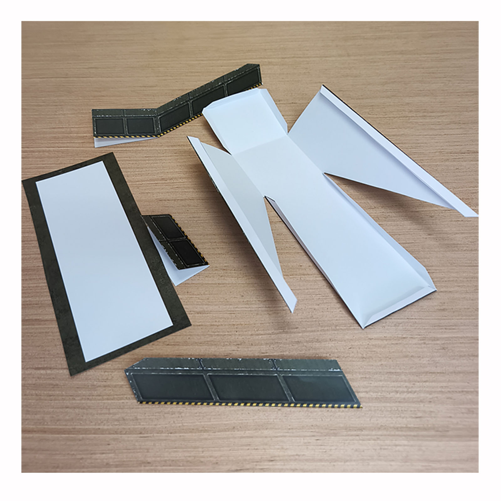
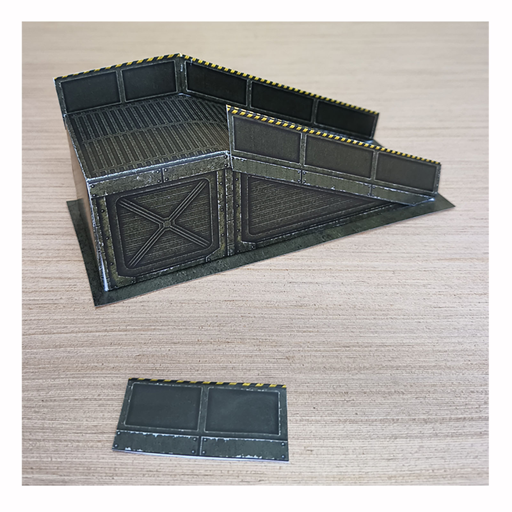

STEP 01
Start with the full-color PDF pages and prepare the parts for cutting.
Printable PDF • DIY Papercraft • Military-Style Display
Build a raised Army Green helicopter landing pad from printable PDF pages. Green steel-look side walls, landing-zone details and a separate access ramp turn the flat artwork into a three-dimensional display base for miniature helicopters and model aircraft.

Miniature helicopter display
The Army Green design combines a clean landing zone with green steel-look side walls and a detailed access ramp. Once assembled, the printable pages become a raised miniature platform rather than a flat backdrop.
Use it as a display base for model helicopters and small aircraft, or add figures, vehicles and scenery to create a larger military-style or aviation diorama.



From printable pages to a 3D landing zone
The photographs show the real papercraft construction process: printed PDF pages, the partially assembled platform, close-up steel-look side walls and the separate access ramp taking shape.

Start with the full-color PDF pages and prepare the parts for cutting.

Fold and glue the main pieces to create the raised helicopter landing pad.

The printed green steel-look surfaces give the paper structure its industrial character.
Build the second element
The access ramp is built separately from the main platform. Cutting, folding and gluing the printed structure creates additional height and detail in the finished miniature display.

Prepare the printed access-ramp components before folding.

Shape the ramp and join the paper sections into a rigid miniature structure.

The close-up view shows the side railing and printed surface details on the nearly finished ramp.
Finished model
Top and perspective views make the height of the landing platform, steel-look walls and position of the separate access ramp easy to see.
Display ideas
The Army Green color scheme works naturally with military-style model collections, but the platform can also be used as a general aviation display or as part of a larger miniature scene.
Give a miniature helicopter a dedicated three-dimensional landing scene instead of a plain shelf.
Use the raised platform for compatible miniature aircraft, drones and aviation models.
Combine the helipad with figures, vehicles and terrain to expand it into a larger display.
Watch the finished build
The short video shows the platform from different angles and makes the three-dimensional shape of the finished papercraft model easier to see.
Paper model, not an STL
This Army Green Helipad is a digital printable PDF papercraft project. The three-dimensional result comes from cutting, folding and gluing the printed paper components rather than 3D printing a plastic model.
Print the full-color PDF artwork at home or through a print service.
Choose a sturdy printable material that folds cleanly and holds its shape.
Scissors or a craft knife and ruler help produce clean paper-model edges.
Assemble the raised platform and the separate access ramp.
Ready to build?
Download the printable PDF on Etsy, then print, cut, fold and assemble the helipad yourself.